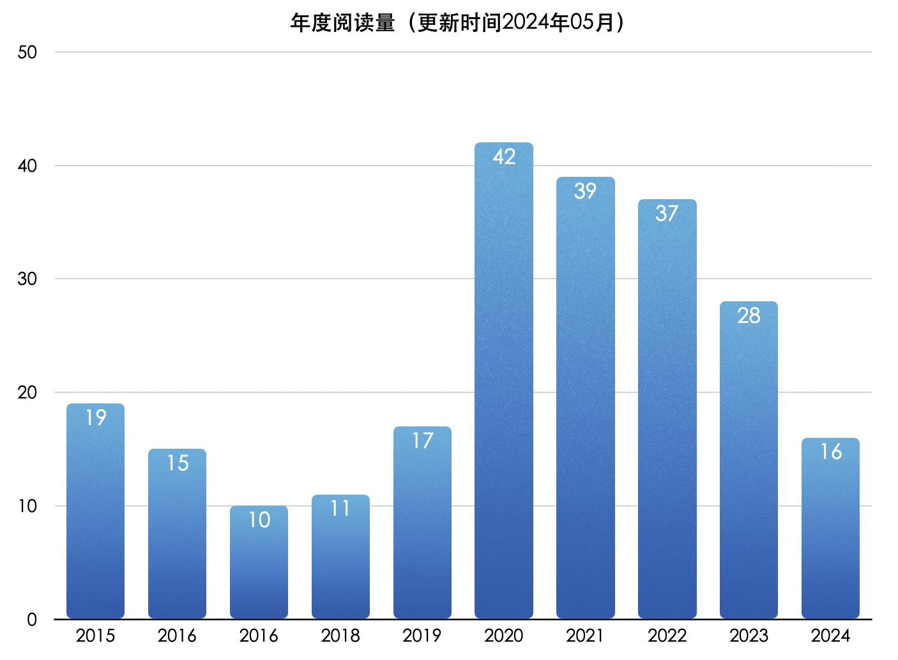

这里所记录的不限于实体书，还包括一些网络课程。

想读
- 杀死一只知更鸟（2023年05月16日加入，文化有限播客推荐）
- 人生模式
- 苔丝
- 夜晚的潜水艇
- 大教堂与集市
- 穷查理宝典
- 我们赖以生存的隐喻
- 不一样的国文课
- 人生（路遥）
- 羊的门
- 社会心理学
- 心理学与生活
- 这才是心理学
- 我的第一本思维导图入门书
- 中国文化的深层结构
- 高效演讲与口才
- 清单革命
- 习惯的力量
- 第三选择
- 计算机程序的构造和解释
- 自卑与超越（阿德勒）
- 一地鸡毛（刘震云）
- 月亮的距离（卡尔维诺）
- 宇宙奇趣故事集（卡尔维诺）
- 怦然心动的人生整理魔法
- 正面管教（二刷）
在读📖
- 红楼梦
- 今天，你更博学了吗？（2023年11月22日-？）
- 面向开发者的 LLM 入门教程（5月16日-？）
- Effective Java 第三版（5月28日-？）
- 人体极限（6月9日-？）
- 不忙不慌-林桂芝（6月11日-？）
- 金瓶梅·上（6月20日-？）
- 读库2403（6月24日-？）
2024
6月
- 大宋病人（5月18日-6月10日）
- 半小时漫画中国史4（6月10日-6月12日）
- 浅谈“两点论”（5月6日-6月12日）
- 🎥AI 大模型企业应用实战（4月23日-？）
- 半小时漫画中国史0（6月14日-6月30日）
5月
- DDIA 逐章精读（2023年09月08日-5月9日）
- 包法利夫人（4月11日-5月15日）
- 读库2303（4月25日-5月18日）
4月
- 读库2304（3月15日-4月6日）
- 苏菲的世界（2月26日-4月10日）
- 读库2402（4月6日-4月24日）
- 论语通读·上（2023年12月5日-4月29日）
3月
- 额尔古纳河右岸（2月21日-3月2日）
- 深度学习推荐系统实战（2023年10月26日-3月5日）
- 白夜（3月2日-3月5日）
- 地下室手记（3月5日-3月15日）
2月
- 罪与罚（1月30日-2月19日）
- 读库2306（1月21日-2月24日）
1月
- 读库2401（12月10日-1月15日）
- 阅读是一座随身携带的避难所（1月1日-1月21日）
- 职场的51个基本（2023年11月25日-1月31日）
2023
12月
- 经典中医启蒙（12月7日-12月26日）
- 能力陷阱（10月25日-12月2日）
- 读库2305（10月25日-12月7日）
11月
- 超级访谈：对话毕玄（7月23日-11月12日）
- GPT 时代的量化交易（10月6日-11月16日）
9月
- 睡眠革命（7月16日-9月19日）
- 读库2302（6月15日-9月22日）
- 幸福的方法（6月18日-9月25日）
8月
- 🎥哈佛幸福课（积极心理学）
- 写作复利（2023年08月10日-2023年08月24日）
- 回忆爱玛侬（2023年07月10日-r2023年08月25日）
7月
- 海风中失落的血色馈赠（2023年6月9日-7月22日）
5月
- 即时消息技术剖析与实战（3月15日-05月25日）
- 🎥扑克脸（Poker Face）
- 读库2301（4月26日-5月30日）
4月
- 五个光子（3月16日-4月3日）
- 有知有行投资第一课（2022年10月17日-4月3日）
- 读库2205（3月19日-4月25日）
- 看完这本书后，我有了考摩托车驾照的计划，然后买一辆本田幼兽🏍️
- System Design Interview（3月11日-4月26日）
3月
- 我们仨（2月12日-3月1日）
- 读库2206（2月1日-3月15日）
- 10x 程序员工作法（2月21日-3月21日）
2月
- 贫困一代：被社会囚禁的年轻人（1月6日-2月7日）
- 一句顶一万句（1月14日-2月13日）
- 数据分析思维课（1月20日-2月24日）
1月
- 命运（蔡崇达）（2022年11月24日-1月4日）
- 读库2204（2022年10月31日-1月5日）
- 长安的荔枝（1月5日-1月12日）
2022
12月
- 文化苦旅（9月23日-？）
11月
- 人间草木（9月23日-11月4日）豆瓣9.2
- 我的内在无穷大【不推荐】（10月10日-11月11日）
- 关键跨越（11月12日-11月26日）
- WTF Solidity极简教程 入门、进阶、应用（11月3日-11月28日）
10月
- 第一人称单数（10月15日-10月28日）
9月
- 读库2203（8月10日-9月9日）
- 福格行为模型（8月23日-9月14日）
- 人间值得（9月14日-9月22日）
- 写作是门手艺（5月31日-9月27日）豆瓣 9.1
8月
- 微服务架构设计模式（6月27日-8月23日）【推荐！！！】豆瓣 9.1
7月
- 叫魂：1768年的中国妖术大恐慌（6月26日-7月31日）豆瓣 9.1
巨婴国（6月27日-？）读不下去
6月
- 沟通的方法（4月16日-6月11日）
- 信息检索导论【前5章，后边有点啃不动】（5月31日-6月11日）
- 文心（5月24日-6月20日）豆瓣 9.2
- 棋王·树王·孩子王（6月21日-6月28日）豆瓣 9.3
5月
- 读库2202（4月11日-5月1日）
- 暴雨下在病房里（5月3日-5月9日）
- 四百年后的真相（5月11日-5月18日）
- 职场求生攻略（4月21日-5月21日）
- 掌控习惯（5月17-5月29日）
- 高效信息管理术（5月5日-6月5日）
4月
- 二刷《红楼梦》中（21年10月5日-4月13日）
- 万千微尘纷坠心田（3月21日-4月10日）
- 高并发架构实战课（2月5日-4月13日）
- 夜行货车（3月27日-4月26日）
3月
- 断舍离（2月20日-3月3日）
- 消息队列高手课（2月5日-3月10日）
- 后端技术面试 38 讲（2刷 2月5日-3月20日）
- Rust 权威指南（1月22日-3月21日）
- 我们为什么要睡觉（2月5日-3月25日）
2月
- 读库2200（1月16日-2月11日）
- 读库2201（1月16日-2月16日）
1月
- 重来3：跳出疯狂的忙碌（21年12月24日-1月3日）
- 凤凰架构（21年11月18日-1月16日）
- 克拉拉与太阳（1月2日-1月16日）
2021
12月
- 手把手带你写一个Web框架（9月20日-12月10日）
- 乡土中国（11月27日-12月13日）
- 人类简史（9月13日-12月17日）
- 都柏林人（12月17日-12月31日）
11月
- Go 专家编程（9月7日-11月12日）
- 伯恩斯焦虑自助疗法（10月6日-11月16日）
- 蛤蟆先生去看心理医生（11月20日-11月27日）
10月
- 二刷《红楼梦》上（6月1日-10月5日）
- Golang修养之路(8月19-10月27日)
9月
- 代码整洁之道（7月16日-9月2日）
- Redis核心技术与实战（7月20日-9月4日）
- 一本小小的红色写作书（9月3日-9月12日）
- 黑客与画家（二刷）（8月9日-9月12日）
- 程序员的个人财富课（7月21日-9月24日）
8月
- 富兰克林自传（7月31日-8月12日）
- 告别失眠：睡眠学家教你睡好觉（8月8日-8月16日）
7月
- 别让猴子跳回背上（7月11日）
- 增长黑客（5月20日-7月15日）
- 象与骑象人（6月28日-7月29日）
- 一半是海水，一半是火焰（6月25日-7月30日）
6月
- 正面管教（5月14日-6月1日）
- 诡计博物馆（5月28日-6月6日）
- 东京奇谭集（6月8日-6月22日）
- 技术与商业案例解读（2月23日-6月23日）
- 感谢自己的不完美（6月3日-6月28日）
5月
- Effective Go（5月1日-5月3日）
- 一本小小的蓝色逻辑书（4月24日-5月4日）
- 幸福散论（4月20日-5月5日）
- 格局（5月4日-5月13日）
- 四世同堂·第3部·饥荒（4月23日-5月26日）
- Unix 编程艺术（20年12月28日-21年5月28日）
4月
- 面向程序员的数据挖掘指南（3月7日-4月1日）
- 推荐系统（3月1日-4月6日）
- 大厂晋升指南（2月28日-4月18日）
- 四世同堂·第2部·偷生（3月11日-4月23日）
3月
- 亲密关系（2月15日-3月6日）
- 四世同堂·第1部·惶惑（1月19日-3月11日）
2月
- 黑天鹅（1月4日-2月14日）
1月
- 儒林外史（20年12月26日-1月19日）
2020
12 月
- 被讨厌的勇气（12月13日-12月16日）
- 红楼梦·中·人民文学出版社[40-80回]（11月25日-12月13日）
- 乔新亮的成长复盘（11月1日-12月27日）
- 红楼梦·下·人民文学出版社[80-12回]（12月13日-12月27日）
- 君主论（12月17日-12月28日）
11 月
- Go 并发编程实战课（10月18日-11月28日）
- 人人都用得上的写作课（10月21日-11月25日）
- 红楼梦·上·人民文学出版社[1-40回]（10月29日-11月24日）
- 如何有效整理信息（10月23日-11月6日）
10 月
- 金字塔原理（二刷）（10月1日-10月22日）
- 如何有效阅读一本书（10月11日-10月21日）
- Linux 性能优化实战（7月19日-10月11日）
- 高效能人士的七个习惯（10月4日-10月7日）
- 瓦尔登湖（9月8日-10月1日）
9 月
- 见识（8月23日-9月6日）
8 月
- 活出生命的意义（8月11日-8月22日）
- 数据密集型应用系统设计（二刷）（7月10日-8月17日）
- 奈飞文化手册（7月29日-8月9日）
7 月
- 互联网人的英语私教课（6月29日-7月31日）
- 北野武的小酒馆（7月15日-7月30日）
- Java 持续交付（6月21日-7月9日）
- 刻意练习（6月25日-7月7日）
6 月
- 程序员修炼之道（第2版）（5月18日-6月19日）
- 计算机网络：自顶向下方法（4月16日-6月14日）
5 月
- 奇特的一生（5月6日-5月7日）
- 毛泽东选集 第二卷（3月9日-5月14日）
4月
3月
- 沟通的艺术（3月3日-3月25日）
- Technical Writing Courses（2月29日-3月11日）
- 大数据入门指南（19年12月21日-3月8日）
2月
- 成为乔布斯（1月31日-2月7日）
- 你当像鸟飞往你的山（2月11日-2月16日）
- 如何阅读一本书（2月17日-2月28日）
- 后端技术面试38讲（19年11月20日-2月24日）
- 开发者必备的 Docker 实践指南（2月17日-2月22日）
1月
- 原则（19年12月11日-1月16日）
- 受戒
- 深度学习入门（1月31日-2月7日）
2019
12月
- 朱赟的技术管理课（12月1日-12月31日）
- 数据密集型应用系统设计（11月18日-12月28日）
- 项目管理实战 20 讲（10月29日-12月17日）
- 简单的逻辑学（12月1日-12月10日）
11月
- 万历十五年（11月13日-11月29日）
- 左耳听风（8月22日-11月17日）
- Go 语言核心 36 讲（10月12日-11月15日）
- 霍乱时期的爱情（10月21日-11月12日）
10月
9月
8 月
4月
- 岛上书店（二刷）
- The Linux Command Line
5月
- 挪威的森林（二刷）
2018
1月
- 软技能 代码之外的生存指南
2月
- 三体1（二刷）
3月
- 活着（二刷）
8月
- 虚无的十字架
9月
- 皮囊
- 月亮和六便士
- 程序员修炼之道–从小工到专家
- Gradle 实战
- 恶意（东野圭吾）
- 我不知道该说什么，关于死亡还是爱情
- 边城
2017
1月
- 摆渡人
- 了不起的盖茨比
2月
- 偷影子的人
- Python 高手之路 (The Hacker’s Guide to Python)
- 富爸爸，穷爸爸
3月
- 小狗钱钱
- 岛上书店
- 嫌疑人X的献身
4月
- 无声告白
8月
- 浪潮之巅
2016
1月
- Redis 入门指南（第2版）
3月
- 第七天（余华）
- 三体·地球往事
- 动物农场
4月
- 黄金时代
- 三体Ⅱ·黑暗森林
- React Native 入门与实战
5月
- 兄弟（余华）
6月
- 三体Ⅲ·死神永生
7月
- 代码的未来
- 白银时代
8月
- 解忧杂货店
9月
- 没有色彩的多崎作和他的巡礼之年
- 北京折叠
12月
- 挪威的森林
2014-2015
- 小王子
- 追风筝的人
- 围城
- 活着
- 1984
- 平凡的世界
- 看见
- 许三观卖血记
- 失控
- 当我谈跑步时我谈些什么
- 白鹿原
- 爱你就像爱生命
- 一只特立独行的猪
- 乖，摸摸头
- 滚蛋吧，肿瘤君
- 人性的弱点
- 白夜
- 孤独六讲
- 黑客与画家
放弃阅读
- 爱的艺术（21年8月12日-？），放弃原因：翻译太烂
- 枪炮、病菌与钢铁，放弃原因：翻译太烂
- Google SRE 工作手册（9月6日-？），放弃原因：读了近一半，感觉收益不大
- Rust 编程第一课（1月14日-？）
- 情绪障碍跨诊断治疗的统一方案自助手册（2023年09月13日-？）